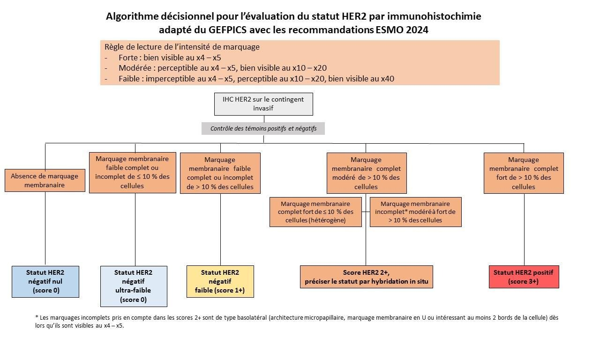
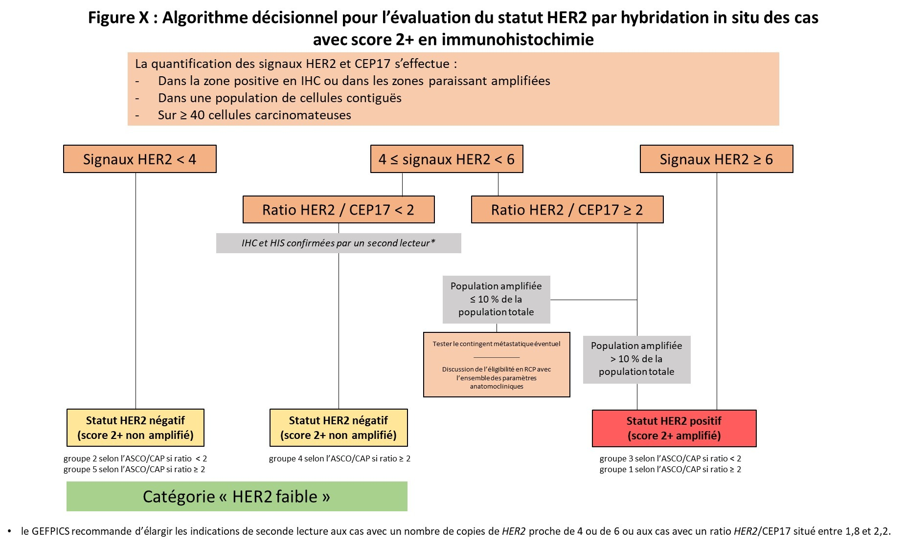

Her2 (c-erbB2)
Points principaux à retenir :
- Lecture : intensité et %, à lire à faible puis à fort grandissement pour repérer les intensités faibles de marquage.
- Seuil positif si > 10%, marquage membranaire continu (voir algorithme ci-dessous, ASCO 2018 et GEFPICS 2021).et d’intensité forte.
- La lecture se fait après validation des témoins externes,
- L'interprétation soigneuse se fait sur les zones de carcinome infiltrant.
- L’évaluation est systématique pour tous les cancers infiltrants au diagnostic et au moment du diagnostic desrechutes locales ou métastatiques.
- Les conditions techniques doivent suivre les recommandations du GEFPICS 2021 et ASCO-CAP 2018.
- Les laboratoires doivent adopter des protocoles validés pour détecter la surexpression de HER2 en lien avec son amplification. Les laboratoires doivent suivre un contrôle de qualité externe (AFAQAP, UK-NEQUAS, NORDIC-QC...) et interne (suivi des pourcentages attendus par stade avec l’aide de l’outil HERFRANCE de l’AFAQAP, grade et types histologiques; adéquation des témoins externes multi tissulaires composés d’un fragment de glande normale, d’un cas amplifié (au moins 6 copies de HER2), d’un cas non amplifié HER2 faible et d’un cas négatif nul).
- Si score 3+ et pas de chimiothérapie néoadjuvante
- Score 3+ sur biopsie faite dans le service : pas de test HER2 sur pièce opératoire
- Score 3+ sur biopsie faite dans un autre laboratoire : retester HER2 sur pièce opératoire
- Si score 3+ et chimiothérapie néoadjuvante et absence de pCR: voir plus haut : il n’est pas nécessaire de refaire le HER2 sur le reliquat tumoral
- Les scores 2+ sont définis :
- Comme un marquage membranaire complet d’intensité modérée de > 10 % des cellules
- Sont à analyser par technique d’Hybridation In situ.
- HER2 faibles (scores 1+ et 2+ non amplifiés) et les HER2 ultra-faibles (score 0 avec 1 à 10% de cellules montrant un marquage membranaire incomplet et d’intensité faible): catégories pouvant bénéficier de nouvelles stratégies de traitement par les anticorps anti HER2 conjugués à des drogues cytotoxiques en cours d’essais cliniques très prometteurs.
Les Conclusions doivent après analyse des scores 2+ par hybridation in situ préciser le statut HER2 selon les recommandations de l’ESMO (Curigliano et al ANNALS OF ONCOLOGY 2023 PMID: 37269905) :
- Statut HER2 positif (score 3+ ou 2+ amplifié)
- Statut HER2 négatif (score 2+, non amplifié ; HER2 faible)
- Statut HER2 négatif (Score 1+ ; HER2 faible )
- Statut HER2 négatif (Score ultra-faible avec 1 à 10% de cellules marquées en membranaire, d’intensité faible et marquage incomplet).
- Statut HER2 négatif nul (0% de cellule positive).
Etude de l’amplification HER2 par technique d’Hybridation In situ
Indications : score 2+ et cas hétérogènes en IHC
• Méthode : sonde HER2 et centromère chr. 17
• Lecture : nb de spots sur au moins 20 cellules carcinomateuses infiltrantes contigues.
Résultat
- Si les signaux HER2 sont <4 en moyenne, le cas est dit non amplifié quel que soit le nombre de signaux pour le centromère 17.
- Pour un nombre de copies 4≤HER2<6, il faut regarder le ratio HER2/CEP17 (qui doit être confirmé par une double lecture, en aveugle) :
- Si le ratio HER2/CEP17 est ≥ 2, la conclusion indique « FISH positive » et le cas est considéré comme éligible à un traitement anti-HER2 et après relecture de l’IHC considérée comme positive 2+. (Attention : ne pas indiquer HER2 amplifié)
- Si le ratio HER2/CEP17 est < 2, le cas est considéré comme HER2 négatif, (grande nouveauté des recommandations ASCO/CAP 2018). Il faut noter que dans cette situation, et contrairement à ce qui était recommandé jusqu’ici, aucun autre test ne doit être réalisé, en particulier, un nouveau test par sonde alternative ou bien sur un autre bloc/prélèvement n’est pas recommandé; seule une confirmation du ratio par une seconde lecture en aveugle sur la même lame est nécessaire. Cette catégorie, autrefois dite équivoque, représente dans différentes séries environ 5% des cas (tous score IHC confondus) (Press et al : 89% IHC 0/1+, 10% IHC 2+, 0.9% IHC 3+).
Notons que désormais la seule situation restant « équivoque » après IHC et HIS correspond aux cas hétérogènes (surexpression/amplification intéressant ≤10% des cellules tumorales). L’éligibilité à un traitement anti-HER2 repose alors dans cette situation sur la connaissance du statut HER2 des localisations métastatiques éventuelles et sur une discussion en RCP avec l’ensemble des données clinicopathologiques.
Les recommandations ASCO/CAP 2018 proposent de catégoriser les résultats de l’HIS double sonde en 5 groupes (certains laboratoires nord-américains effectuant une HIS en première intention). Le groupe d’expert ASCO/CAP identifie ainsi à l’issue d’une HIS double sonde, 5 situations possibles.
- Le groupe 1 (Signaux HER2 ≥ 4, Ratio≥2) et le groupe 5 (Signaux HER2 < 4, Ratio<2) représentent 95% des résultats et leur interprétation est sans équivoque
- Le groupe 1 : HER2 positif
- Le groupe 5 : HER2 négatif
- Le groupe 2 (Signaux HER2 < 4, Ratio≥2) : la FISH est considérée comme positive mais il n’y a pas à proprement parlé d’amplification du gène HER2.
- Le groupe 3 (Signaux HER2 ≥6, Ratio<2) : amplification du gène avec une sur-représentation des centromères du chromosome 17.
- Le groupe 4 (4 ≤ Signaux HER2 <6, ratio HER2/CEP17 < 2) ne représentent que 5% des résultats mais constituent en fait la majorité des situations d’interprétation problématique.
Ces groupes 2, 3, 4 nécessitent une confrontation à l’immunohistochimie pour déterminer le statut HER2, ce qui est nouveau par rapport aux recommandations ASCO/CAP de 2013.
Algorithmes HER2
IHC HER2

HYBRIDATION IN SITU HER2
